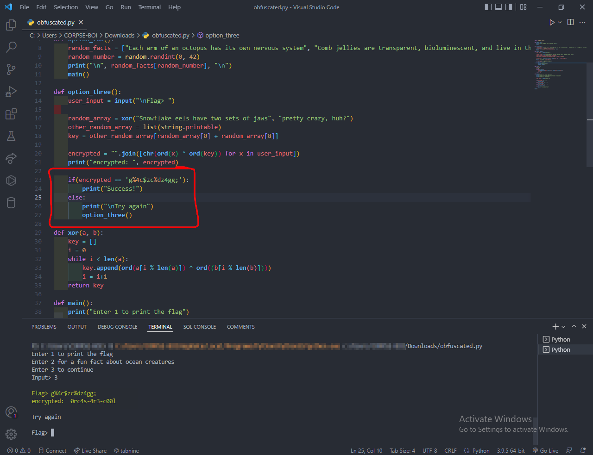

Category: Reverse Engineering
Level: EasyChallenge
This challenge should help you to learn more about reverse engineering Python code. But if not, at least you can learn more about sea creatures!!
Solution
This was an easy challenge to warm up xd they gave us a python file
called "obfuscated.py" has a base64 encoded string/real_script_code
once i decoded the base64 i got the script code readable there were 2
ways for me to solve this challenge but i choosed the easy way after i
ran it asked me to choose 1 option of 3 options:
1- print the flag
2-Enter 2 for a fun fact about ocean creatures
3- Enter 3 to continue
of course first option not going to print the flag so i choosed the
third one to continue it asked for flag, and after reading the source
code i saw that it makes an equation and prints the user_input after
made this equation so i typed the encrypted string in the file:
encrypted = "".join([chr(ord(x) ^ ord(key)) for x in user_input])
print("encrypted: ", encrypted)
if(encrypted == 'g%4c$zc%dz4gg;'):
print("Success!")
else:
print("\nTry again")
option_three()
- [ ] i typed it "g%4c$zc%dz4gg;" and it returned a string seems to be
a flag [ 0rc4s-4r3-c00l ] i tried it and it worked

# obfuscated.py
import random, string
def option_one():
print("\nJust kidding, it's not that easy\n")
main()
def option_two():
random_facts = ["Each arm of an octopus has its own nervous system", "Comb jellies are transparent, bioluminescent, and live in the twilight zone", "Star fish are echinoderms and don't have brains", "Greenland sharks are the slowest sharks and develop parasites in their eyes", "Whale sharks are the largest sharks, with mouths up to 15 feet wide but are only filter feeders", "Basking sharks are also sharks with wide mouths that are only filter feeders", "There are electric stingrays that are able to send electric shocks to predators in order to stun them and escape", "The pacfic octopus is the largest octopus", "There are 8 species of sea turtles, although it is debated that there are only Leatherback Olive Riddley Kemp Riddley Hawksbill Loggerhead Flatback Green Black (altough debated to be the same species as Green)", "The leatherback sea turtle is the largest species of sea turtle, growing up to 9 feet long", "The gender of sea turtles is dependent on the temperature where the eggs were laid", "Sea turtles are NOT strictly herbivores but also eat jellyfish", "Sea turtles need to breath air. If they are scared off the beach by humans they could potentially swim out too far and then drown before making it back to land", "Hawksbill sea turtles are hunted down for their shells", "Bro how are jellyfish animals?? They have no brains! Same with sea stars", "Sea stars will kill their pray with acid and then turn their stomachs inside out to eat", "Sharks can also turn their stomachs inside out to regergitate food", "Tiger sharks have incredibly sharp teeth that can bite through metal", "Tiger sharks are called the garbage gut of the sea and there are been license places, tires, and other weird things found in their stomachs", "Some sharks don't have to be constantly moving in order to breath. Buccal pumping vs obligate ram ventilation", "The only bones sharks have are their jaws. Their skeletal structure is made out of cartilage", "The only bones an octopus has is their beak, which is in the center of their arms", "An octopus can fit through anything that their beak can fit through", "Hagfish are so weird guys. They produce a lot of slime", "Octopuses are known to be very smart and very curious creatures. They will investigate and play with scuba divers", "The smallest shark is some type of lantern shark (forgot the exact name)", "Lemon sharks are named such because their skin feels like lemon rinds", "Cookie cutter sharks are named such because their teeth take out small, circular chunks, kind of like a cookie cutter", "Deep sea angler fish: the female is much, much larger than the male", "In the past, people have tried to add great white sharks into aquariums. However, the great whites would just die if they were restricted to such a small space", "The largest jellyfish is called the lions mane", "Most venomous jellyfish is the boxjellyfish", "Most venomous octopus is the blue-ringed octopus", "Most venemous sea snail is the cone snail", "Sand dollars are actually sea urchins", "The crown of thorns is an extremely invasive species of sea star", "The severed limbs of sea stars will grow into another sea star", "People would try to kill the crown of thorns by smashing them, but that backfired because the severed limbs just became another sea star", "Archer fish will spit out water to knock bugs off of plants so that they can eat them", "Baby sharks are called pups", "Zebra sharks are more commonly known as leopard sharks in and around the Andaman Sea, but this is confusing as there is another species of shark called the leopard shark", "Orcas are the largest members of the dolphin family", "Killer whales are the most widely distributed mammals, other than humans and possibly brown rats, according to SeaWorld. They live in every ocean around the world and have adapted to different climates, from the warm waters near the equator to the icy waters of the North and South Pole regions"]
random_number = random.randint(0, 42)
print("\n", random_facts[random_number], "\n")
main()
def option_three():
user_input = input("\nFlag> ")
random_array = xor("Snowflake eels have two sets of jaws", "pretty crazy, huh?")
other_random_array = list(string.printable)
key = other_random_array[random_array[0] + random_array[8]]
encrypted = "".join([chr(ord(x) ^ ord(key)) for x in user_input])
print("encrypted: ", encrypted)
if(encrypted == 'g%4c$zc%dz4gg;'):
print("Success!")
else:
print("\nTry again")
option_three()
def xor(a, b):
key = []
i = 0
while i < len(a):
key.append(ord(a[i % len(a)]) ^ ord((b[i % len(b)])))
i = i+1
return key
def main():
print("Enter 1 to print the flag")
print("Enter 2 for a fun fact about ocean creatures")
print("Enter 3 to continue")
user_input = input("Input> ")
if(user_input == '1'):
option_one()
elif(user_input == '2'):
option_two()
elif(user_input == '3'):
option_three()
else:
print("Invalid option")
main()
# FLAG: byuctf{0rc4s-4r3-c00l}